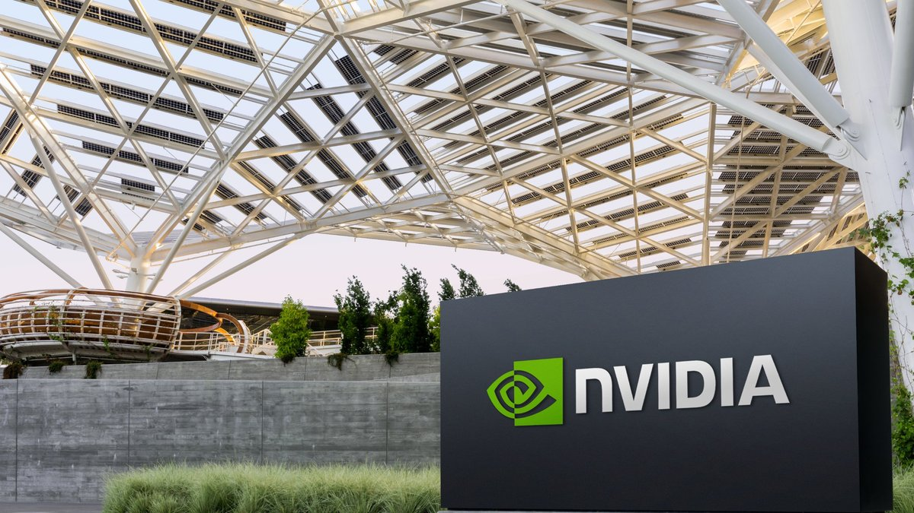
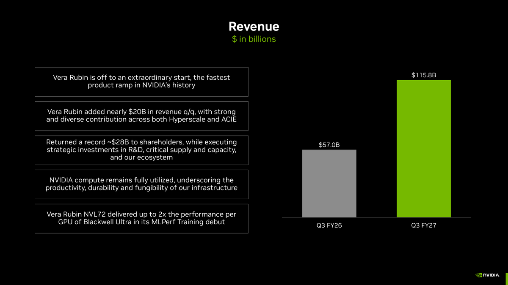
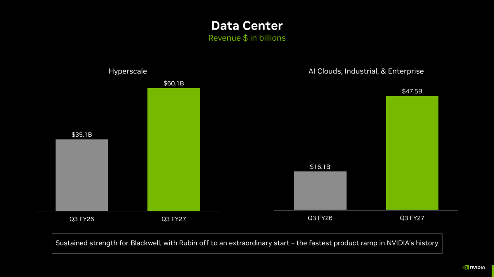
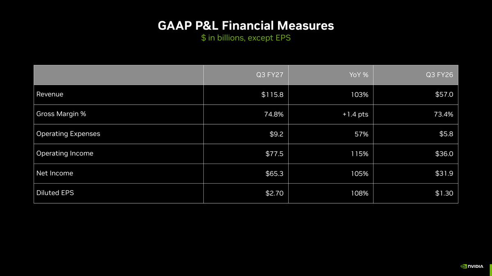
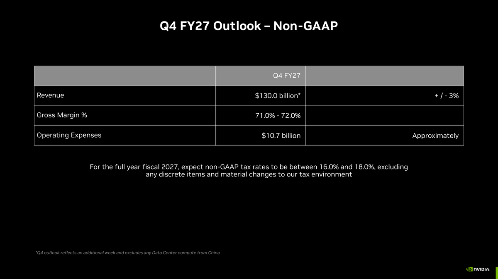
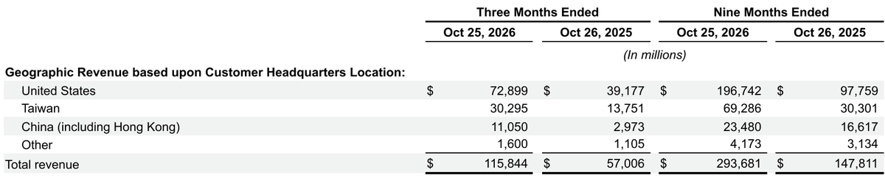

Analyse

Nvidia Q3: Umsatz mehr als verdoppelt auf 115,8 Mrd. $
$NVDA
Nvidia steigert den Umsatz im dritten Quartal um 103 % und stellt für das vierte Quartal 130 Mrd. $ in Aussicht. Zugleich läuft eine Untersuchung, und die Verteilung nach Ländern zeigt, wo die Kunden sitzen, nicht wo die Chips landen.

Kurz gesagt
Umsatz: 115,8 Mrd. $, plus 103 % zum Vorjahresquartal (57,0 Mrd. $).
Gewinn: 2,70 $ je Aktie, plus 108 %. Bereinigt sind es 2,68 $, plus 111 %.
Ausblick: 130 Mrd. $ Umsatz im vierten Quartal, plus/minus 3 %. Die Analysten erwarten für das Geschäftsjahr 2027 rund 412 Mrd. $. Der Ausblick liegt darüber.
Führung: Jensen Huang ist zurückgetreten. Interimschefin ist Finanzchefin Colette Kress. Ein unabhängiger Ausschuss des Verwaltungsrats untersucht den Vorgang.
Länder: Nach Sitz der direkten Kunden entfallen 72,9 Mrd. $ auf die USA, 30,3 Mrd. $ auf Taiwan und 11,1 Mrd. $ auf China einschließlich Hongkong. Singapur taucht nicht auf.
Nvidia hat im dritten Quartal des Geschäftsjahres 2027 mehr als das Doppelte des Vorjahresumsatzes erlöst. Getragen wird das vor allem von den Rechenzentren großer Cloudanbieter und von der Nachfrage aus anderen KI-Kunden. Das Unternehmen führt den Anlauf der neuen Plattform Vera Rubin an, den es als den schnellsten in seiner Geschichte beschreibt.
Die Zahlen sind stark, doch sie kommen in einer schwierigen Lage. Der Konzern wechselt gerade seine Führung, und zugleich laufen Fragen zu seinen Offenlegungen und zu seinen Geschäften in Asien. Entscheidend ist, ob der Ausblick die Erwartungen der Analysten trägt. Dort gibt es zwei Punkte, die die Lesart verändern: die sinkende Bruttomarge und die Frage, wie sich der Konsens rechnerisch schließt.
Umsatz und Gewinn im Quartal
Der Umsatz stieg auf 115,8 Mrd. $. Gegenüber dem Vorquartal (96,2 Mrd. $) sind das 20 % mehr. Der Rechenzentrumsbereich trug 107,6 Mrd. $ bei, rund 93 % des Gesamtumsatzes. Die Sparte Edge kam auf 8,2 Mrd. $.

Folie „Revenue“ aus der Investor Presentation Q3 FY27 (November 2026), S. 3.Innerhalb des Rechenzentrums hat sich das Gewicht verschoben. Die Hyperscaler, also die großen Cloudanbieter, bezahlten 60,1 Mrd. $ nach 35,1 Mrd. $ im Vorjahr, ein Plus von 71 %. Die Gruppe „AI Clouds, Industrial & Enterprise“ steigerte sich von 16,1 auf 47,5 Mrd. $, rund 195 %. Diese zweite Gruppe wächst also deutlich schneller und holt auf.

Folie „Data Center“ aus der Investor Presentation Q3 FY27 (November 2026), S. 4.Die Bruttomarge lag bei 74,8 % (GAAP) beziehungsweise 74,9 % (bereinigt), jeweils 1,4 Prozentpunkte über dem Vorjahr. Die operativen Kosten stiegen auf 9,2 Mrd. $ (GAAP), ein Plus von 57 %. Der operative Gewinn kletterte auf 77,5 Mrd. $ und hat sich damit mehr als verdoppelt (plus 115 %). Die operative Marge liegt damit bei 66,9 %.

Folie „GAAP P&L Financial Measures“ aus der Investor Presentation Q3 FY27 (November 2026), S. 9.Beim Gewinn je Aktie stehen 2,70 $ (GAAP) und 2,68 $ (bereinigt) zu Buche. Seit dem ersten Quartal des Geschäftsjahres 2027 rechnet Nvidia die aktienbasierte Vergütung in die bereinigten Zahlen ein. Die Vorjahreswerte sind entsprechend angepasst, der Vergleich ist also sauber. Im Vorquartal lag der bereinigte Gewinn bei 2,22 $.
Der freie Cashflow erreichte 43,8 Mrd. $, fast doppelt so viel wie im Vorjahr (22,1 Mrd. $). Nvidia gab 28,1 Mrd. $ an die Aktionäre zurück, nach 12,7 Mrd. $. Die Vierteljahresdividende liegt bei 0,25 $ je Aktie. Für Rückkäufe stehen noch rund 227 Mrd. $ bereit, die das Unternehmen bis zum Geschäftsjahr 2028 nutzen will.
Die Forderungen aus Lieferungen und Leistungen betragen 81,0 Mrd. $. Das entspricht rund 70 % des Quartalsumsatzes und einer Forderungslaufzeit von 64 Tagen, nach 60 Tagen im Vorquartal. Die Vorräte stiegen von 31,6 auf 39,7 Mrd. $. Nvidia begründet das mit dem Anlauf von Rubin.
Ausblick: 130 Mrd. $ und eine niedrigere Marge
Für das vierte Quartal erwartet das Management einen Umsatz von 130,0 Mrd. $, plus oder minus 3 %. Das ist ein Plus von rund 12 % gegenüber dem dritten Quartal. Das vierte Quartal umfasst eine zusätzliche Woche, die Prognose deckt also einen längeren Zeitraum ab.
Die Bruttomarge soll zwischen 71,0 und 72,0 % liegen, nach 74,9 % im dritten Quartal. Der Rückgang um rund drei Punkte führt Nvidia auf den frühen Rubin-Anlauf zurück. Die operativen Kosten sind mit 10,7 Mrd. $ (bereinigt) bzw. 11,0 Mrd. $ (GAAP) angesetzt. Der Steuersatz für das Gesamtjahr liegt zwischen 16 und 18 %. Die Prognose schließt außerdem Rechenzentrumsleistung für China aus.

Folie „Q4 FY27 Outlook – Non-GAAP“ aus der Investor Presentation Q3 FY27 (November 2026), S. 11.Zum Vergleich mit den Analystenschätzungen (Quartr, Stand 17.11.2026): Für das Geschäftsjahr 2027 liegt der Umsatzkonsens bei rund 412 Mrd. $ und der Gewinn bei 9,30 $ je Aktie. Für 2028 sind es 689 Mrd. $ und 15,90 $.
Die ersten drei Quartale summieren sich auf 293,7 Mrd. $: 81,6 Mrd. $ im ersten, 96,2 Mrd. $ im zweiten und 115,8 Mrd. $ im dritten Quartal. Damit der Konsens von 412 Mrd. $ hält, müsste das vierte Quartal rund 118 Mrd. $ bringen. Die Prognose liegt bei 130 Mrd. $ und selbst am unteren Ende der Spanne (126 Mrd. $) darüber. Der Ausblick liegt also über dem Jahreskonsens.
Ob der Konsens die China-Ausklammerung schon berücksichtigt, geht aus den Unterlagen nicht hervor.
Hintergrund: Rücktritt, Untersuchung, Singapur
Jensen Huang ist als Vorstandsvorsitzender zurückgetreten. Nach Berichten über private Beziehungen, die im Unternehmen Fragen aufwarfen, hat er sich öffentlich erklärt und eigene Fehler eingeräumt, ohne Einzelheiten zu nennen. Nvidia nennt in der Mitteilung Colette Kress als Interimschefin und spricht von der Suche nach einem neuen Vorstandsvorsitzenden. Die Untersuchung durch einen unabhängigen Ausschuss des Verwaltungsrats bestätigt das Unternehmen selbst in seinen Unterlagen.
Nach Berichten des Wall Street Journal prüft zusätzlich die US-Börsenaufsicht SEC den Konzern. Es handelt sich um ein zivilrechtliches Verfahren, dessen Schwerpunkt nicht bekannt ist. Die Berichte, die auf anonyme Quellen zurückgehen, besagen, es gehe unter anderem um die Frage, ob Anleger über Offenlegungen in die Irre geführt wurden. Das ist nicht belegt, und Nvidia hat die SEC-Untersuchung nicht bestätigt. Finanzminister Scott Bessent hat öffentlich gefragt, ob Nvidia Chips nach China verkauft hat, um die Gewinne zu steigern, und Antworten vom Verwaltungsrat und externen Anwälten binnen zehn Tagen verlangt. Laut WSJ liegt der Kurs seit dem Rücktritt mehr als 10 % im Minus. Den Singapur-Teil erklärt dieser Hintergrund. Nach WSJ-Angaben strich Nvidia 2025 die Offenlegung der Verkäufe nach Singapur. In Singapur saß das Datenunternehmen Megaspeed, das Nvidia-Chips für KI-Rechenzentren in Südostasien einsetzte. Es stand seit Ende 2024 unter Untersuchung des US-Handelsministeriums, weil Produkte im Verdacht standen, nach China umgeleitet zu werden. Ob die Streichung der Angabe und diese Untersuchung zusammenhängen, ist nicht belegt.
Singapur: Was der Bericht beantwortet und was nicht
Singapur taucht in den Tabellen nicht als eigene Zeile auf. Nvidia weist die Regionen nach dem Sitz der direkten Kunden aus und merkt dazu an, dass Endkunde und Lieferort davon abweichen können. Wo die 117,8 Mrd. $ der Singapur-Gesellschaft verbucht sind, bleibt damit offen. Diese Summe stammt aus der Berichterstattung der Financial Times und nicht aus den Unterlagen. Auch die Quartalsberichte für das erste und zweite Quartal nennen Singapur nicht.
Die Verteilung nach dem Sitz der direkten Kunden sieht so aus: USA 72,9 Mrd. $ (plus 86 % zum Vorjahresquartal), Taiwan 30,3 Mrd. $ (plus 120 %), China einschließlich Hongkong 11,1 Mrd. $ (plus 272 %), übrige Länder 1,6 Mrd. $. Die USA stehen damit für gut 62 % des Umsatzes, Taiwan für 26 %.
Die Ergänzungsunterlagen weisen für das dritte Quartal 37 % des Umsatzes an Kunden aus, deren Sitz außerhalb der USA liegt (Vorjahr 31 %). Die Formulierung bezieht sich also auf den Sitz der Kunden, nicht auf den Ort, an dem die Chips eingesetzt werden. Welcher Teil dieser 37 % auf Taiwan, China oder andere Länder entfällt, zeigt die Tabelle nur grob, und wo die Chips am Ende stehen, lässt sich daraus nicht ablesen. Interims-Chefin Kress kündigte an, das 10-Q folge in den kommenden Wochen. Bis dahin gibt es nur das Supplement.

Tabelle „Geographic Revenue based upon Customer Headquarters Location“ aus der Supplemental Financial Information zum Quartal (Form 8-K vom 17.11.2026), S. 6. Millionen US-Dollar.Über die drei Quartale hinweg verschieben sich die Anteile. China einschließlich Hongkong stieg von 4,6 Mrd. $ im ersten Quartal über 7,9 Mrd. $ im zweiten auf 11,1 Mrd. $ im dritten. Taiwan sprang im zweiten Quartal von 12,0 auf 27,0 Mrd. $ und lag im dritten bei 30,3 Mrd. $. Der US-Umsatz schwankte zwischen 63,8, 60,1 und 72,9 Mrd. $.
Wie stark verzerrt der Methodenwechsel den Vergleich? Die Vorjahreszahlen sind im Bericht auf derselben Basis angegeben, der Vergleich innerhalb der neuen Tabelle stimmt also. Der Wegfall der Singapur-Angabe ist eine bewusste Änderung der Offenlegung, keine Umrechnung. Auf gleicher Basis lag der Auslandsanteil im ersten Quartal 2026 bei 22 % (Vorjahr 42 %), im zweiten bei 38 % (Vorjahr 30 %).
Wie viel davon ist Endnachfrage, wie viel interner Durchlauf? Nicht beantwortet. Der Bericht trennt keinen Verkauf an andere Konzerngesellschaften aus.
Was bleibt als Gewinn? Nicht beantwortet. Es gibt keine Gewinnangabe je Land. Die Marge von rund 0,05 % aus der FT-Angabe bezieht sich auf die Singapur-Gesellschaft allein und lässt sich nicht prüfen.
Wohin gehen die Chips? Teilweise. Die direkten Kunden verteilen sich auf die Standorte ihrer Zentralen. Zu den direkten Kunden zählen laut Bericht Boardhersteller, Distributoren, ODMs, OEMs, Cloudanbieter, Frontier Labs und Systemintegratoren. Der hohe Taiwan-Anteil zeigt also den Sitz dieser Zwischenhändler, nicht den Einsatzort der Chips.
Zur Qualität des Umsatzes kommt eine Konzentration hinzu. Drei direkte Kunden stehen für 36 % des Quartalsumsatzes (14, 11 und 11 %). Zwei direkte Kunden stehen für 35 % der Forderungen (18 und 17 %). Im zweiten Quartal lagen fünf Kunden bei 70 % der Forderungen, der größte bei 22 %. China einschließlich Hongkong hat sich fast vervierfacht, Hopper-Lieferungen dorthin lagen bei 2,4 Mrd. $. Die Prognose klammert China-Rechenleistung aus.
Was wir im 10-Q prüfen, den Nvidia in den kommenden Wochen einreichen will: - Gibt es eine Angabe nach Lieferort oder Endkunde, und ist sie mit dem Vorjahr vergleichbar? - Weist Nvidia den internen Verkauf an Konzerngesellschaften getrennt aus? - Erwähnt der Bericht die Untersuchung des Verwaltungsrats, die SEC-Prüfung, Exportkontrollen oder einen Compliance-Ausschuss? Die Angabe „Legal settlement costs“ von 107 Mio. $ im Quartal ist im Bericht ohne Erläuterung.
Verpflichtungen und Bürgschaften
Die Lieferverpflichtungen stiegen auf 390 Mrd. $, nach 279 Mrd. $ im Vorquartal. Verpflichtungen für Cloud-Dienste und Rechenzentrumsmieten summieren sich auf 102 Mrd. $ (nach 74 Mrd. $). Für Neocloud-Verträge stehen weitere 32 Mrd. $ bereit.
Die höchste Einzelposition sind Bürgschaften mit einem Höchstbetrag von 118 Mrd. $. Davon entfallen 105 Mrd. $ auf eine Kreditunterstützung für einen Campus in Ohio, der Nvidia-Infrastruktur beherbergen soll, die über 20-jährige Mietverträge an OpenAI vermietet wird. Nvidia hat bisher keine Zahlungen daraus geleistet. Die Verpflichtung wächst erst, wenn die einzelnen Gebäude fertig sind, das erste ist für 2029 vorgesehen.
Einordnung für Anleger
Das Wachstum ist beachtlich, die Margen steigen, der Cashflow ist hoch. Zwei Punkte bremsen das Bild: Die Bruttomarge soll im vierten Quartal um rund drei Punkte fallen, und Forderungen und Kundenkonzentration sind hoch. Dazu kommen Verpflichtungen und Bürgschaften in dreistelliger Milliardenhöhe, die zu einem großen Teil an Kunden und Partner hängen.
Die Führungsfrage und die Untersuchungen sind ein eigener Risikofaktor. Die SEC-Prüfung ist nach den bisherigen Berichten zivilrechtlich und in ihrem Umfang unklar. Ein Ausgang lässt sich daraus nicht ableiten. Auf der anderen Seite steht ein Quartal mit starkem Wachstum und stabiler Marge. Ob es die Erwartungen übertroffen hat, lässt sich aus den Unterlagen nicht ablesen, weil dort keine Vorab-Schätzung für das Quartal steht.
Die Singapur-Frage betrifft weniger die Schlagzeilen als die Qualität des Umsatzes. Solange die Angaben nach Lieferort und internen Verkäufen fehlen, lässt sich diese Qualität nicht abschließend beurteilen. Das ist der Teil, den wir mit dem 10-Q nachreichen.
Dieser Artikel ist keine Anlageberatung.
Quellen: NVIDIA Corporation, Form 8-K vom 17.11.2026 mit Pressemitteilung, CFO-Kommentar und Supplemental Financial Information, https://investor.nvidia.com; Investor Presentation Q3 FY27 (November 2026); Wall Street Journal, Bericht zur SEC-Untersuchung und zum Rücktritt von Jensen Huang (17.11.2026); Form 10-Q für die Quartale zum 26.04.2026 und 26.07.2026; Financial Times (17.11.2026); Quartr, Schätzungen NVIDIA (Stand 17.11.2026).
Bei Google als bevorzugte Quelle hinzufügen
Hinweis: Dieser Text dient der allgemeinen Information und ist weder Anlage-, Steuer- noch Rechtsberatung. Kapitalanlagen sind mit Risiken verbunden, bis hin zum Totalverlust.